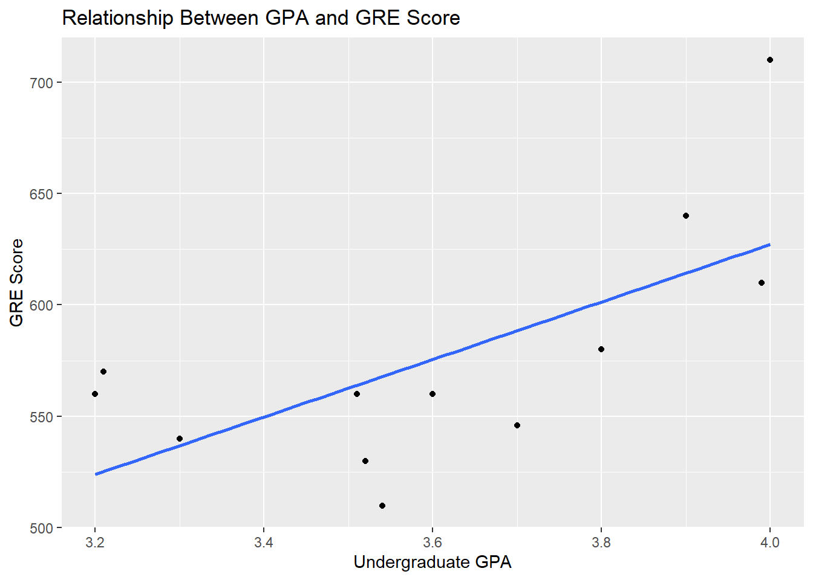
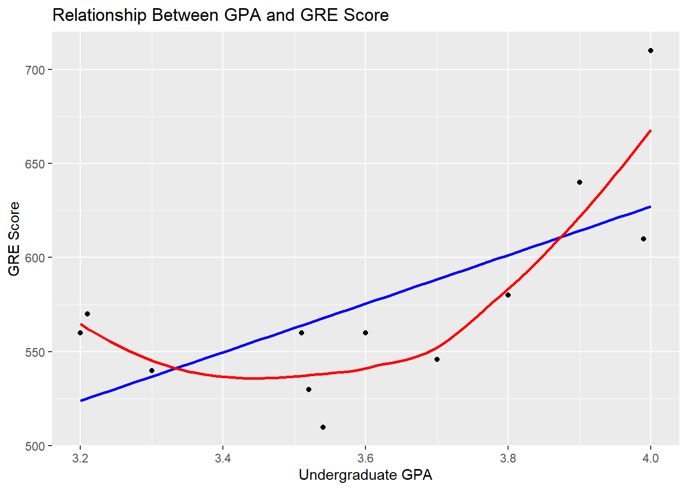
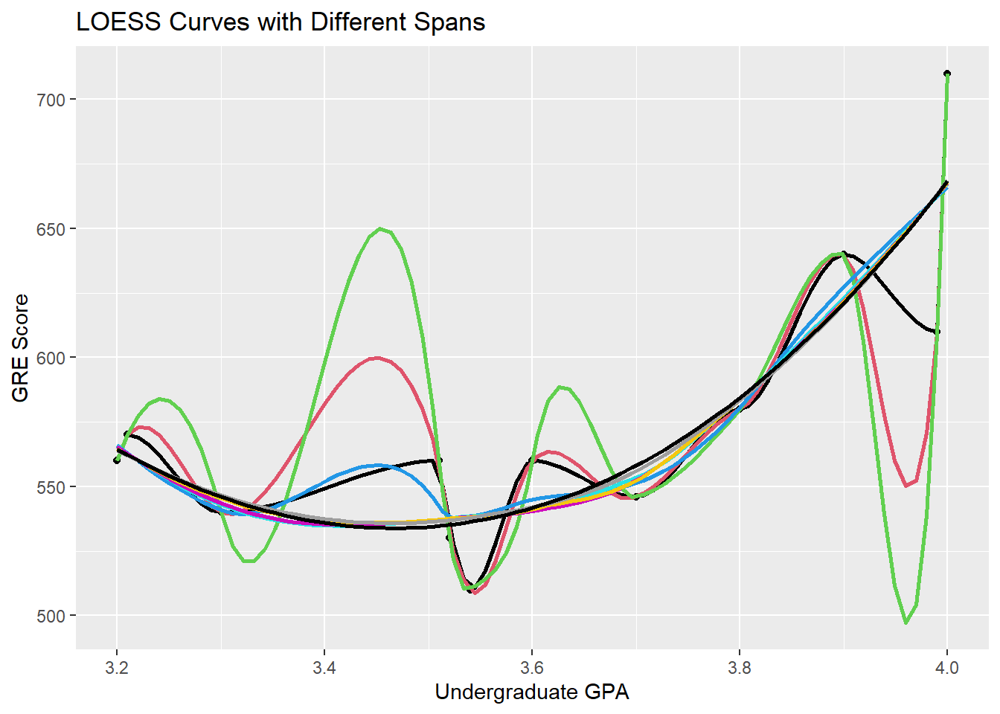

Rows: 128 Columns: 2
── Column specification ────────────────────────────────────────────────────────
Delimiter: ","
chr (1): Treatment
dbl (1): NTU
ℹ Use `spec()` to retrieve the full column specification for this data.
ℹ Specify the column types or set `show_col_types = FALSE` to quiet this message.
grad_school <-read_csv("grad_school.csv")
Rows: 12 Columns: 2
── Column specification ────────────────────────────────────────────────────────
Delimiter: ","
dbl (2): GPA, GRE
ℹ Use `spec()` to retrieve the full column specification for this data.
ℹ Specify the column types or set `show_col_types = FALSE` to quiet this message.
dogwood <-read_csv("DogwoodSeeds.csv")
Rows: 34 Columns: 2
── Column specification ────────────────────────────────────────────────────────
Delimiter: ","
chr (1): Treatment
dbl (1): Seeds
ℹ Use `spec()` to retrieve the full column specification for this data.
ℹ Specify the column types or set `show_col_types = FALSE` to quiet this message.
For each of the following questions, please provide your analysis and an interpretation (e.g., written as you would in a scientific publication). If it helps to describe your result, add tables or figures to help make your case. For every case, explain why you chose the particular analysis you did and demonstrate the reasons from the data.
1.The FDA has suggested a change in a medication that has been shown to have detrimental side effects in half of the patients. A clinical trial was conducted with nineteen patients; only three reported side effects. Did the change make a significant difference?
successes <-3trials <-19null_prob <-0.5binom.test(successes, trials, p = null_prob, alternative ="less")
Exact binomial test
data: successes and trials
number of successes = 3, number of trials = 19, p-value = 0.002213
alternative hypothesis: true probability of success is less than 0.5
95 percent confidence interval:
0.0000000 0.3594256
sample estimates:
probability of success
0.1578947
we fail to reject the null hypothesis, there’s not enough evidence to conclude that the new medication is significantly better
2.Two different environmental remediation treatments are evaluated for the impacts on turbidity (measured using the Nephelometric Turbidity Unit or NTU). For regulatory reasons, turbidity is binned into four groups based on NTU: 0-15 ntu, 16-22 ntu, 23-30 ntu, and 31+ ntu. Do both treatments have the same impact on turbidity? Explain.
The p value is significantly less than the critical value so we can reject the null hypothesis. We can conclude that there is an association between the use of treatment A or B and the turbidity bin the results fall into.
3.A dozen graduate students tried to determine if there was a relationship between their undergraduate GPA and their scores on the Graduate Records Examination. Look at these data and determine the extent to which they are related. Explain.
ggplot(grad_school, aes(x = GPA, y = GRE)) +geom_point() +geom_smooth(method ="lm", se =FALSE) +labs(x ="Undergraduate GPA", y ="GRE Score", title ="Relationship Between GPA and GRE Score")
`geom_smooth()` using formula = 'y ~ x'

model <-lm(GRE ~ GPA, data = grad_school)summary(model)
Call:
lm(formula = GRE ~ GPA, data = grad_school)
Residuals:
Min 1Q Median 3Q Max
-57.842 -24.848 -9.777 28.297 82.827
Coefficients:
Estimate Std. Error t value Pr(>|t|)
(Intercept) 111.25 165.16 0.674 0.516
GPA 128.98 45.68 2.824 0.018 *
---
Signif. codes: 0 '***' 0.001 '**' 0.01 '*' 0.05 '.' 0.1 ' ' 1
Residual standard error: 42.65 on 10 degrees of freedom
Multiple R-squared: 0.4436, Adjusted R-squared: 0.388
F-statistic: 7.974 on 1 and 10 DF, p-value: 0.01804
loess_model <-loess(GRE ~ GPA, data = grad_school)summary(loess_model)
Call:
loess(formula = GRE ~ GPA, data = grad_school)
Number of Observations: 12
Equivalent Number of Parameters: 4.44
Residual Standard Error: 32
Trace of smoother matrix: 4.9 (exact)
Control settings:
span : 0.75
degree : 2
family : gaussian
surface : interpolate cell = 0.2
normalize: TRUE
parametric: FALSE
drop.square: FALSE
ggplot(grad_school, aes(x = GPA, y = GRE)) +geom_point() +geom_smooth(method ="lm", formula = y ~ x, se =FALSE, color ="blue") +geom_smooth(method ="loess", se =FALSE, color ="red") +labs(x ="Undergraduate GPA", y ="GRE Score",title ="Relationship Between GPA and GRE Score")
`geom_smooth()` using formula = 'y ~ x'

fit <-loess( GRE ~ GPA, data=grad_school)print(fit)
Call:
loess(formula = GRE ~ GPA, data = grad_school)
Number of Observations: 12
Equivalent Number of Parameters: 4.44
Residual Standard Error: 32
span_values <-seq(0.2, 1.0, by =0.1)ggplot(grad_school, aes(x = GPA, y = GRE)) +geom_point() +lapply(seq_along(span_values), function(i) {geom_smooth(method ="loess", span = span_values[i], se =FALSE, color = i) }) +scale_color_manual(values =c("red", "blue", "green", "purple", "orange")) +labs(x ="Undergraduate GPA", y ="GRE Score",title ="LOESS Curves with Different Spans")
`geom_smooth()` using formula = 'y ~ x'
`geom_smooth()` using formula = 'y ~ x'
`geom_smooth()` using formula = 'y ~ x'
`geom_smooth()` using formula = 'y ~ x'
`geom_smooth()` using formula = 'y ~ x'
`geom_smooth()` using formula = 'y ~ x'
`geom_smooth()` using formula = 'y ~ x'
`geom_smooth()` using formula = 'y ~ x'
`geom_smooth()` using formula = 'y ~ x'

The relationship between GPA and GRE score can be resonable predicted by a non parametric local regression. A local regression can explain all 12 data points with a residual error of 32, meaning the predicted GRE scores deviate from the actual scores by about 32 points.
4.You are looking at fruit yield on dogwood. You designed an experiment with four different treatments and measured the total yield in germinated seeds. Are there differences in yield? Explain.
Notch went outside hinges
ℹ Do you want `notch = FALSE`?
Notch went outside hinges
ℹ Do you want `notch = FALSE`?
Notch went outside hinges
ℹ Do you want `notch = FALSE`?
Notch went outside hinges
ℹ Do you want `notch = FALSE`?
Kruskal-Wallis rank sum test
data: Seeds by Treatment
Kruskal-Wallis chi-squared = 25.629, df = 3, p-value = 1.141e-05
The given p-value is 1.141e-05, this is significantly less than 0.05, this means the porbability of observing this result if the null hypothesis is true is extremly low. We can reject the null hypothesis and say that the given treatments caused differences in the yield of seeds.